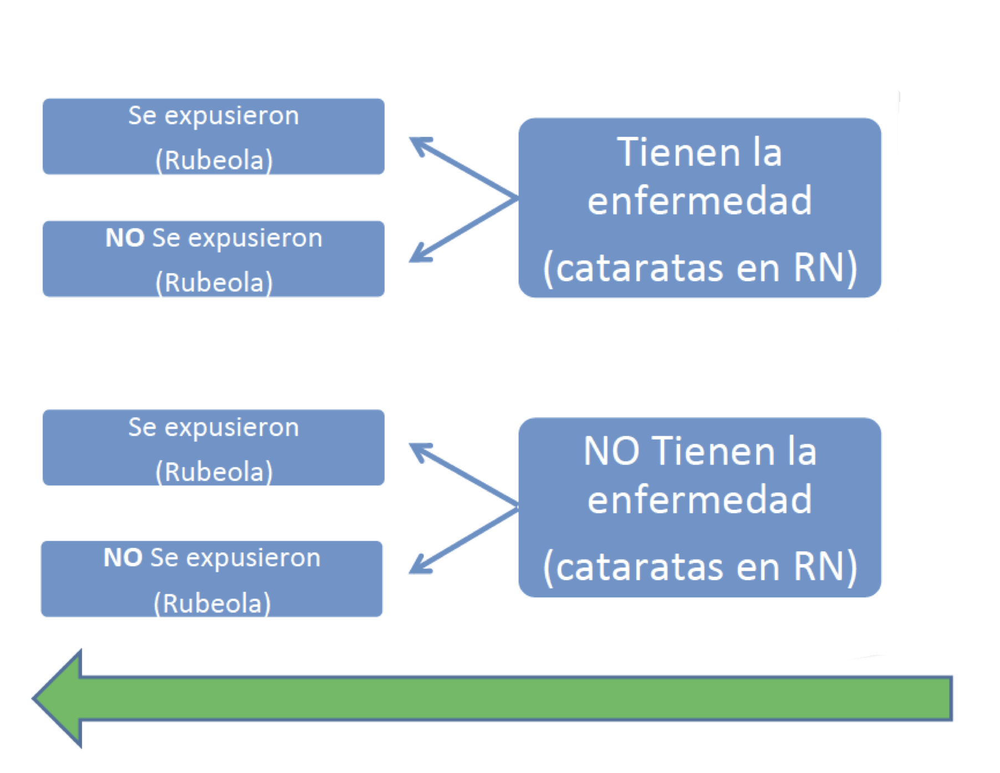
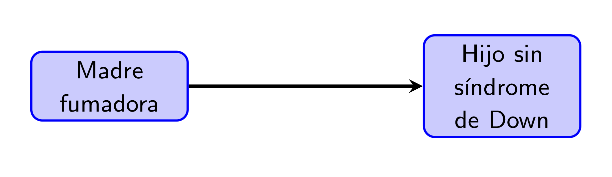
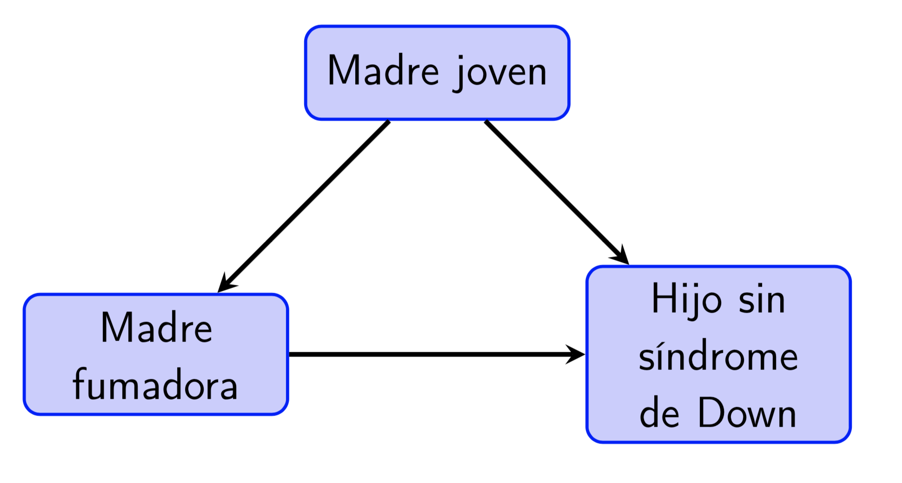

Lección 1 Tipos de estudios médicos
Un estudio es un proceso, documentado desde su diseño hasta su ejecución, cuyo objetivo es obtener evidencia empírica sobre alguna cuestión. En el caso de los estudios médicos que nos ocupa en este curso, esta cuestión puede tratar sobre la efectividad de un tratamiento de una determinada enfermedad, la precisión de un test diagnóstico, las causas de una enfermedad, alguna cuestión de salud pública…
Podemos clasificar los estudios de diferentes maneras:
Según el alcance que persiguen:
Descriptivos: Solo describen las características de un grupo de individuos
Analíticos: Intentan inferir asociaciones para el total de la población(entre causa/efecto, antecedente/resultado…)
Por ejemplo:
- “A una serie de pacientes con la enfermedad X les hemos administrado el tratamiento A y se han curado”: Descriptivo
- “Hemos dividido al azar un grupo de pacientes con la enfermedad X en dos grupos; a unos les hemos administrado el tratamiento A y a los otros el tratamiento B; los tratados con A han tenido una tasa de curación en 8 días más alta que los tratados con B; inferimos que el tratamiento A es más efectivo que el B”: Analítico
Según el papel jugado por el investigador:
Observacionales: El investigador recoge información, sin ninguna influencia planificada sobre los acontecimientos
Experimentales: El investigador influye en los acontecimientos de manera planificada y observa el efecto de su influencia
Por ejemplo:
- “Hemos recogido datos de todos los pacientes con la enfermedad X en nuestro hospital durante un año y anotado qué tratamiento se les administró; los tratados con A han tenido una tasa de curación en 8 días más alta que los tratados con B; inferimos que el tratamiento A es más efectivo que el B”: Observacional
- “Hemos dividido al azar un grupo de pacientes con la enfermedad X en dos grupos; a unos les hemos administrado el tratamiento A y a los otros el tratamiento B; los tratados con A han tenido una tasa de curación en 8 días más alta que los tratados con B; inferimos que el tratamiento A es más efectivo que el B”: Experimental
Según el lapso de tiempo en el que se recoge la información:
Transversales: Se recoge información sobre un solo momento
Longitudinales: Se recoge información sobre varios momentos de tiempo y se estudian los cambios producidos entre los mismos
A su vez, estos últimos suelen dividirse en
* **Prospectivos**: Se recoge información en momentos posteriores al inicio del estudio * **Retrospectivos**: Se recoge información sobre momentos anteriores al inicio del estudio
A continuación discutimos con algo de detalle algunos tipos básicos de estudios médicos.
1.1 Estudios descriptivos
Los tres tipos principales de estudios descriptivos son
Informe de caso: La descripción detallada de un paciente
Serie de casos: Descripción detallada de un conjunto pequeño de pacientes con alguna característica en común que hace que tenga sendido el agruparlos
Encuesta (survey): Descripción de un conjunto grande de individuos con alguna característica en común
Los estudios descriptivos sirven básicamente para identificar observaciones interesantes que merezcan ser investigadas.
Ejemplo 1.1 El artículo “Diabetes tipo 2 en niños. Serie de casos” de H. Manrique-Hurtado, P. Aro-Guardia y M. Pinto-Valdivia (Revista Médica Herediana 26 (2015), pp. 5-9), que podéis consultar aquí es, como indica su título, un ejemplo típico de serie de casos. Se trata de una descripción detallada de las características de un grupo de 32 niños y adolescentes entre 8 y 19 años recién diagnosticados de diabetes tipo 2 (DM2) en dos hospitales de Lima (Perú) entre 2008 y 2013. Entre otras características, observaron que 85% de ellos (27) presentaban acantosis pigmentaria (un transtorno de la piel) y que un 17% (5 muchachos) tenían cetoacidosis diabética (CAD) en el momento del diagnóstico, que suele ir asociada a diabetes de tipo 1 y no 2, y que los 5 tenían una serie de características comunes, por ejemplo todos tenían acantosis pigmentaria.
Todas estas observaciones sirven para confirmar, o contradecir, observaciones realizadas en otros momentos u otros países sobre pacientes de DM2 en esta franja de edad, y además pueden plantear cuestiones sobre la DM2 en niños y adolescentes que puedan ser susceptibles de responderse mediante estudios analíticos. ¿Es la acantosis pigmentaria un síntoma frecuente de DM2 entre niños y adolescentes? ¿Presentar CAD y acantosis pigmentaria es un síntoma de DM2 en vez de DM1?1.2 Estudios de casos y controles
En un estudio de casos y controles, se toma un grupo de individuos con una enfermedad (los casos) y un grupo de individuos sin esta enfermedad (los controles), y se comparan retrospectivamente para encontrar diferencias en la exposición a factores de riesgo en el pasado. El objetivo es determinar qué factores de riesgo fueron más frecuentes entre los casos que entre los controles, para inferir que, en la población general, la exposición a dichos factores está asociada a una mayor probabilidad de sufrir la enfermedad.

Los estudios de casos y controles son:
Observacionales, porque se recogen datos y se analizan sin influir en las características que se han medido
Analíticos, puesto que el objetivo es deducir la asociación entre los factores de riesgo y la enfermedad a nivel poblacional
- Longitudinales, puesto que se analiza información a lo largo de un período de tiempo: desde el momento en que los sujetos son declarados casos o controles hacia el pasado, por lo que son retrospectivos.
Veamos un estudio de casos y controles más reciente.
Ejemplo 1.3 En el estudio “Tabaquismo y fracaso del tratamiento de la tuberculosis pulmonar. Un estudio de casos y controles” (Jornal Brasileiro de Pneumologia 45.2 (2019), e20180359; se puede consultar aquí), Juan Pablo Aguilar y colaboradores tomaron todos los pacientes que recibieron tratamiento contra la tuberculosis en un cierto instituto brasileño entre 2007 y 2015 y que además satisfacían algunas restricciones extra (mayores de 15 años, sin diabetes ni SIDA…). Definieron como casos aquellos pacientes en los que el tratamiento fracasó (según los criterios establecidos por la Directiva Nacional Brasileña para el Control de la Tuberculosis) y como controles aquellos pacientes en los que tuvo éxito. En total fueron 50 casos y 234 controles.
Se analizaron un buen número de antecedentes que pudieran tener influencia en el desarrollo del tratamiento de la tuberculosis: sexo, edad, historial de fumador, historial de consumo de alcohol, salario etc. La única diferencia significativa (un término con un significado muy concreto, sobre el que volveremos más adelante en el curso, por ahora lo tomaremos con su sentido intuitivo) que encontraron fue en el fumar: un 52% de los casos eran fumadores en el momento del diagnóstico de la tuberculosis o lo habían sido antes, contra solo un 30% de los controles. En cambio, por ejemplo, eran consumidores frecuentes de alcohol en el momento del diagnóstico de la tuberculosis o lo habían sido antes un 59% de los casos y un 52% de los controles.
En este estudio, los números de casos y controles no se prefijaron en su diseño, sino que se tomaron “los que encontraron” en un grupo de individuos. Esto no siempre es así, y habrá que tenerlo en cuenta a la hora de realizar el análisis estadístico de los datos y presentar las conclusiones.
Un consumo de alcohol de 0.1-9.9 g/día disminuye el riesgo de cáncer de pulmón, aunque no se alcanza la significación estadística. Un consumo de alcohol \(\geqslant 30\) g/día y de tabaco \(\geqslant 36\) paquetes/año aumenta significativamente el riesgo de cáncer de pulmón. Un consumo elevado de verduras (\(\geqslant 116.65\) g/día) disminuye el riesgo de cáncer de pulmón con un consumo de alcohol de 0.1-9.9 g/día. Un consumo de alcohol de 10-29.9 g/día en individuos portadores del alelo ADH1B 48His aumenta el riesgo de cáncer de pulmón. Etc.
Hemos dicho que la diferencia entre casos y controles es la presencia o no de una “enfermedad” y que se analiza su exposición previa a “factores de riesgo”. Aquí tanto “enfermedad” como “factores de riesgo” se han de tomar en un sentido metafórico. Los casos son individuos a los que les pasa “algo”, que puede ser una enfermedad pero también puede ser un embarazo o suspender una asignatura, y se estudia “qué han hecho antes” para intentar adivinar una posible relación de causa-efecto.
Por ejemplo:
Podemos querer estudiar si el fracaso escolar aumenta la probabilidad de ser fumador: tomamos como casos un grupo de fumadores y como controles un grupo de no fumadores, y consultamos su historial académico.
Podemos querer estudiar si ser fumador aumenta la probabilidad de fracaso escolar: tomamos como casos un grupo de estudiantes que no hayan terminado la ESO y como controles un grupo que sí la hayan terminado, y les pedimos si fumaban, a qué edad empezaron, cuánto fumaban diariamente etc.
Algunas ventajas de los estudios de casos y controles:
- Suelen ser fáciles de llevar a cabo, rápidos y baratos
- Son adecuados para estudiar enfermedades raras, poco frecuentes, ya que podemos partir de un grupo de enfermos y un grupo de sanos sin tener que esperar a encontrar los enfermos en una muestra de individuos.
- Podemos estudiar de golpe la asociación entre la exposición a muchos factores de riesgo y la enfermedad que nos ocupa.
Y ahora algunos inconvenientes:
- En primer lugar, no pueden “demostrar” que la exposición a un riesgo “cause” una enfermedad. Ni los estudios de casos y controles, ni ningún otro estudio observacional (ni, en realidad, en este mundo imperfecto en que vivimos, ningún estudio expeimental). Por ejemplo, en el estudio de casos y controles sobre consumo de alcohol y cáncer de pulmón observaron que entre los enfermos de cáncer de pulmón había una mayor frecuencia de sujetos que consumían más de 30 gramos diarios de alcohol más de 36 paquetes de tabaco anuales, y de aquí concluyen que
Un consumo de alcohol \(\geqslant 30\) g/día y de tabaco \(\geqslant 36\) paquetes/año aumenta significativamente el riesgo de cáncer de pulmón.
Pero esta afirmación hay que entenderla. De ninguna manera están afirmando que un consumo de alcohol \(\geqslant 30\) g/día y de tabaco \(\geqslant 36\) paquetes/año “cause un aumento” del riesgo de cáncer de pulmón, sino simplemente que entre los individuos con estos malos hábitos hay una mayor frecuencia de cáncer de pulmón que en el resto de la población.
Son muy susceptibles a sesgos (estudiaremos el tema de los sesgos en general con más detalle en la Lección ??) en la recogida de datos:
Si los datos sobre exposición a riesgos se recogen mediante entrevistas o cuestionarios, los sujetos pueden mentir (recordad la máxima “Todo el mundo miente” del Dr. G. House), consciente (para ocultar comportamientos que consideren reprobables, para mirar de agradar al entrevistador,…) o inconscientemente (haber olvidado detalles relevantes)
En particular, se puede dar un sesgo de memoria, ya que casos y controles pueden recordar datos relevantes de manera diferente. Si uno tiene un percance, puede que recuerde más los detalles previos al mismo para buscar “qué hizo mal” que uno que no lo tenga.
También se puede dar un sesgo de supervivencia, si solo se estudian individuos “vivos”. Por ejemplo, si queremos llevar a cabo un estudio d ecasos y controles para una enfermedad con una tasa de mortalidad al mes del diagnóstico muy alta y solo entrevistamos enfermos diagnosticados que estén vivos, puede que bastantes de ellos hayan sobrevivido mucho tiempo a la enfermedad y por lo tanto no sean “típicos”.
Hay que tener mucho cuidado en la selección de controles, intentando que se parezcan el máximo posible a los casos en características para las que no queramos estudiar la asociación con nuestra enfermedad.
Así, en el ejemplo sobre el fracaso del tratamiento de la tuberculosis, hubiera sido un error tomar como controles pacientes exitosos de otras clínicas, que pudieran seguir protocolos de tratamiento diferentes con tasas de éxito diferentes. O en el ejemplo de la asociación entre el consumo de alcohol y el cáncer de pulmón, fue preferible tomar como controles un grupo de enfermos de otras enfermedades en vez de un grupo de personas completamente sanas.
En particular, los estudios de casos y controles son muy susceptibles al efecto de confundidores: Características asociadas con la exposición que pueden causar la enfermedad. Por ejemplo, en el caso de la asociación entre cataratas congénitas y rubeola materna, podría ser que la causa de las cataratas en los neonatos fuera el tratamiento de la rubeola, no la enfermedad. O por ejemplo, podríamos encontrar una asociación entre tomar café y tener cáncer de pulmón que fuera debida a que los consumidores de café tienden a ser fumadores y el fumar aumenta la probabilidad de cáncer de pulmón.
Figura 1.1: “-Do you smoke? -Only when I drink [pausa] coffee.” Roberto Benigni en Strange to meet you de Jim Jarmusch; https://www.youtube.com/watch?v=pBa-2nXCc7g
Ejemplo 1.5 En el estudio de casos y controles “Congenital malformations and maternal smoking during pregnancy” (P. Shiono et al, Teratology 34 (1986), pp. 65-71) se observó que las madres fumadoras tenían una frecuencia menor de hijos con síndrome de Down.

Más adelante (C. L Chen, T. Gilbert, R. Daling, “Maternal smoking and Down syndrome: the confounding effect of maternal age” American Journal of Epidemiology 149 (1999), pp. 442-446) se observó que no se había tenido en cuenta la edad de las madres: las madres jóvenes suelen ser fumadoras con mayor frecuencia que las no tan jóvenes, y las madres de más de 40 años tienen una mayor frecuencia de hijos con síndrome de Down.

Hay un inconveniente en el que igual ya habéis caído y que hemos dejado para el final. El objetivo de un estudio de casos y controles, el objetivo es determinar si la exposición a un factor de riesgo aumenta la probabilidad de padecer una enfermedad y en cuánto la aumenta. Por tanto, lo que se quiere es comparar las proporciones de enfermos entre los expuestos y entre los no expuestos. Pero las proporciones que se observan son las de expuestos entre enfermos y no enfermos.
En el estudio de la rubeola y las cataratas congénitas, se observó que las madres de hijos con cataratas congénitas habían sufrido con mayor frecuencia rubeola durante el embarazo, pero lo que interesa es saber si las madres que tienen la rubeola durante el embarazo tienen con mayor frecuencia hijos con cataratas congénitas.
En el estudio sobre consumo de alcohol y cáncer de pulmón, se observó que entre los enfermos de cáncer de pulmón hay una mayor frecuencia de consumo de alcohol \(\geqslant 30\) g/día y de tabaco \(\geqslant 36\) paquetes/año, pero lo que interesa es saber si entre los consumidores de más de 30 gramos diarios de alcohol más de 36 paquetes de tabaco anuales hay una mayor presencia de pulmón.
La conclusión global es correcta: si la proporción de expuestos entre los enfermos es mayor que entre los sanos, la proporción de enfermos entre los expuestos es mayor que entre los no expuestos. Pero el “cuánto mayor” ya no se puede determinar si tomamos unas números prefijados de casos y de controles que no representen las proprociones de casos y de controles en la población.
Como veremos, este inconveniente tendrá solución estadística.
1.3 Estudios de cohorte(s)
En un estudio de cohorte (o de cohortes), se toma un grupo de individuos expuesto a un factor de riesgo y un grupo de individuos no expuestos a dicho factor de riesgo, o más en general, diversos grupos de individuos expuestos a diferentes factores de riesgo, y se les realiza un seguimiento durante un período de tiempo para estudiar la aparición de una enfermedad. El objetivo es determinar bajo qué factores de riesgo fue más frecuente la aparición de la enfermedad, para inferir que, en la población general, la exposición a dichos factores está asociada a una mayor probabilidad de sufrir la enfermedad. Como el objetivo es estudiar la aparición de la enfermedad tras la exposición, los sujetos de los diferentes grupos han de estar sanos (es decir, sin la enfermedad de interés) en el momento de iniciar su seguimiento.

Los estudios de cohortes son también observacionales, analíticos y longitudinales, por exactamente los mismos motivos que los de casos y controles. Aunque la información que se analiza se toma desde el momento en que los sujetos son clasificados según su exposición a factores de riesgo, y por tanto siempre es prospectiva, se suele distinguir entre estudios de cohortes prospectivos y retrospectivos según el momento (presente o pasado) en que se realiza dicha clasificación:
Prospectivo: se toman los expuestos y no expuestos a día de hoy, y se estudia su evolución futura
Retrospectivo o Histórico: se toman los expuestos y no expuestos en un cierto momento del pasado, y se estudia su evolución hasta hoy
El estudio de Rotterdam fue prospectivo. Veamos otro ejemplo de estudio de cohortes prospectivo.
Veamos ahora un ejemplo de estudio de cohortes retrospectivo.
Los factores de riesgo cardiovascular (FRCV) son bien conocidos, pero su grado de control no es óptimo. Se pretende valorar la evolución y el control de los FRCV clásicos tras 5 años de seguimiento de una cohorte y su relación con la incidencia de arteriopatía periférica (AP).
Estudio de cohorte prospectivo. Selección de pacientes 2006-2008; segunda visita entre 2011-2012. En ambas fases se registraron FRCV, tensión arterial, etc.
Tabaquismo y HTA mal controlados incrementan el riesgo para AP en esta población. Persiste un control subóptimo de los FRCV.
Las modificaciones inmunológicas e inflamatorias observadas en la psoriasis podrían favorecer el desarrollo de la aterosclerosis, aumentando consecuentemente la mortalidad. Se pretende determinar la mortalidad de una población con psoriasis en comparación con un grupo control.
Se analizó una cohorte retrospectiva a partir de historias clínicas electrónicas. Se incluyeron todos los pacientes con diagnóstico de psoriasis a 1-01-2010, comparándolos con un grupo control del mismo sistema de salud, seleccionados de forma aleatoria (relación 1:1). Se excluyeron los sujetos con antecedentes cardiovasculares. El seguimiento se extendió hasta el 30-6-2015.
Se analizaron 1481 pacientes con psoriasis y 1500 controles. La prevalencia de los FRCV fue más elevada en el grupo con psoriasis. La psoriasis se asoció significativamente con una mayor mortalidad en comparación con el grupo control.
En esta población, los pacientes con psoriasis mostraron una mayor prevalencia de factores de riesgo cardiovascular en el momento del diagnóstico y una mayor mortalidad en el seguimiento.
Ambos son observacionales
{ <<El peso al nacer tiene efectos importantes y duraderos, según revela un estudio difundido por la Universidad de Michigan. Pesar menos de 2.5 kg aumenta en un tercio las posibilidades de abandonar la escuela secundaria, reduce las ganancias anuales en alrededor de un 15% []>>\[1ex]
}
: :Se observan simultáneamente (o en un corto espacio de tiempo) la enfermedad y factores que puedan influir en la misma (u otras características) en una muestra de individuos
: Proporción de individuos <<>> en una población en un momento determinado
: Proporción (o número absoluto, según) de casos de una enfermedad en una población en un periodo de tiempo
{H. Wang . ``Estimates of global, regional, and national incidence, prevalence, and mortality of HIV, 1980-2015: the Global Burden of Disease Study 2015.’’ 3 (2016), e361–87
}
Se realizó un diseño descriptivo transversal de base poblacional. Se dividió la comunidad en 14 sectores y participaron 3 o 4 médicos de familia por sector (50 en total). Se seleccionó aleatoriamente a 40 personas entre las adscritas a cada médico, que se captaron en la consulta, por carta y por teléfono. []
Las prevalencias estimadas fueron: tabaquismo del 27% (el 36,9% en varones y el 18,7% en mujeres); hipertensión del 47,8% (el 52,3% en varones y el 43,4% en mujeres) []
El mes de nacimiento puede reflejar exposiciones a factores durante el embarazo y en los primeros meses de vida que pueden influir en la aparición de enfermedades crónicas en edades adultas. Se pretende evaluar la asociación entre el mes de nacimiento y la presencia de enfermedades crónicas en la población española.
Se escogieron al azar 29,478 personas, que representaron aproximadamente a \(44.7\times 10^6\) de españoles residentes a 1/1/2007, y se midió la asociación entre 27 enfermedades crónicas comunes con el mes de nacimiento.
Se han encontrado asociaciones significativas entre el mes de nacimiento y tener diversas enfermedades crónicas.
Determinar la prevalencia de hipertensión arterial, así como de diabetes y dislipidemia en el hipotiroidismo subclínico (HS).
Se tomó un grupo de 720 pacientes de un CAP. Se evaluó la presencia de HS (240 tuvieron HS y 480 no), hipertensión arterial, diabetes [].
No se observaron diferencias en la prevalencia de hipertensión arterial o de diabetes en sujetos con y sin HS. Los pacientes con HS presentaron cifras más elevadas de colesterol total.
Determinar la prevalencia de hipertensión arterial, así como de diabetes y dislipidemia en el hipotiroidismo subclínico (HS).
No se observaron diferencias en la prevalencia de hipertensión arterial o de diabetes en sujetos con y sin HS. Los pacientes con HS presentaron cifras más elevadas de colesterol total.
: :: se describe una muestra y a partir de las asociaciones observadas se estiman asociaciones en la población
: el objetivo es describir el conjunto de individuos involucrados, no generalizar las observaciones a una población mayor (no se considera una muestra de una población mayor)
¿Qué tipos de estudios permiten estimar la incidencia de una enfermedad? Marcad todas las respuestas correctas:Las variables de interés se miden a nivel de grupos, no individual: se compara la ocurrencia de una enfermedad entre grupos con diferentes niveles de exposición (países, ciudades, barrios, )
El radón residencial es la segunda causa de cáncer de pulmón y la primera en sujetos que nunca han fumado. Galicia es un área de alta emisión de radón. El objetivo de este estudio es analizar la correlación entre mortalidad por cáncer de pulmón y exposición a radón residencial en los municipios gallegos.
Se realizó un estudio ecológico en el que se incluyeron 192 municipios con al menos 3 mediciones de radón residencial cada uno. El número de muertes por cáncer de pulmón se obtuvo del Registro de Mortalidad de Galicia.
La correlación entre la mortalidad por cáncer de pulmón y la concentración de radón es significativa para los varones pero no para las mujeres.
Existe asociación entre el radón residencial y la mortalidad municipal por cáncer de pulmón en Galicia en varones, aunque en las mujeres esta asociación no es estadísticamente significativa. Estos datos evidencian que el radón residencial puede aumentar el riesgo de cáncer de pulmón en varones, aunque en las mujeres no se puede establecer ninguna conclusión.
Cuidado con la falacia ecológica:
No tenemos ninguna evidencia directa de:En un estudio analítico, se estudia una pequeña de individuos y a partir de ella se estiman propiedades de la que representa
Conviene tomar la muestra (al azar):En la práctica, la mayoría de muestras son (individuos a los que tenemos acceso); qué le vamos a hacer
: Se dispone de una lista de toda la población, se escoge una muestra al azar de manera que todas las muestras del mismo tamaño tengan la misma probabilidad de ser elegidas
Es la técnica que en la teoría de este curso supondremos que hemos usado, pero en la práctica casi nunca es factible (requiere una lista completa de la población)
Lo consideraremos con más detalle más adelante
: Se dispone de una lista ordenada de toda la población, se toma un individuo al azar y el resto se van tomando a partir de este a intervalos regulares (uno de cada 10, uno de cada 100,)
El esquema a veces se aplica sin la lista de toda la población: por ejemplo, a pacientes a medida que ingresan en una clínica(): Los individuos se encuentran agrupados de manera natural en grupos (calles, escuelas, hospitales,), se toma una muestra aleatoria de los grupos y la muestra final está formada por todos los miembros de los grupos elegidos (o por una muestra aleatoria de cada grupo: )
Adecuado cuando no se tiene una lista de toda la población, y en general es más fácil de llevar a cabo (pero matemáticamente peor)
: Para encuestar una muestra de enfermeras, se escogen al azar centros de salud y se entrevistan todas las enfermeras de los mismos
: Los individuos se encuentran clasificados en diferentes grupos de interés para el estudio (: sexo, franjas de edad, ciudades, ) y se toma una muestra aleatoria de cada estrato
A veces se impone que los tamaños de las muestras sean proporcionales a los tamaños de los estratos (de manera que se refleje en la muestra la composición de la población en estratos)
: <<Se dividió la comunidad en 14 sectores y participaron 3 o 4 médicos de familia por sector (50 en total). Se seleccionó aleatoriamente a 40 personas entre las adscritas a cada médico []>>
: Dividimos la población en delgados (ICC \(\leqslant 0.89\)), normales (\(0.90\leqslant\mbox{ICC}\leqslant 1.09\)) y obesos (ICC \(\geqslant 1.10\)); estas clases representan el 14%, el 38% y el 48% de la población en los EEUU. Se toma una muestra de 100 pacientes de un centro de salud formada por una muestra aleatoria de 14 delgados, una muestra aleatoria de 38 normales y una muestra aleatoria de 48 obesos.
En una población se quiere determinar la prevalencia de pediculosis en niños menores de 12 años. Para ello se divide la población en barrios y en cada uno de ellos se toma una muestra aleatoria cuyo tamaño idóneo ha sido previamente determinado. El tipo de muestreo utilizado ha sido:: Los individuos se encuentran agrupados de manera natural en grupos, se toma una muestra (aleatoria) de los grupos, y la muestra final está formada por una muestra (aleatoria) de cada grupo (elegida por algún otro método, posiblemente de nuevo multietápico)
: En un estudio sobre deficiencia de ácido fólico en jóvenes, se dividió una ciudad en distritos electorales y se escogieron 4 al azar; a continuación se escogieron al azar 10 manzanas y una esquina de las mismas en cada distrito; finalmente se recorrió cada manzana en sentido horario a partir de la esquina seleccionada y se visitó una casa de cada tres y se entrevistó todos los habitantes de 10 a 19 años en estas casas.
En la realidad, se tomó una lista de toda la población española y se escogió al azar de manera equiprobable una conjunto de 29,478 personas: se usó la Encuesta Nacional de Salud
:
Disponemos de las listas de todos los pacientes tratados por hipertensión en todos los centros de salud de una ciudad. Cada lista está ordenada por fecha de nacimiento. Para tomar una muestra de hipertensos, escogemos dos centros de salud al azar, y en cada uno de ellos cada décimo paciente en su lista de hipertensos. ¿Qué tipo de muestreo hemos usado?
Un estudio publicado describe varias características de los pacientes ingresados con neumonía en un hospital durante un año, incluidos el sexo, la edad, el historial de tabaquismo y el historial de ingreso previo por neumonía. ¿De qué tipo de estudio se trata?
Un artículo publicado considera a los pacientes atendidos en una clínica por apendicitis aguda tratada con apendicectomía laparoscópica. Los agrupa según presentaran o no infección de la herida una semana después del alta. El estudio compara entre ambos grupos los factores que se anotaron en el ingreso, como la edad, el sexo, la presencia de dolor en el cuadrante inferior derecho, la temperatura, entre otros. ¿De qué tipo de estudio se trata?
: Estudio médico experimental con humanos
Los individuos se distribuyen en grupos que son sometidos a tratamientos diferentes (al menos: grupo tratado y grupo de ), el investigador todos los aspectos relevantes del experimento, y posteriormente se comparan los resultados
, permiten establecer asociación causal entre las variables, porque el investigador controla la intervención
Solo en teoría, porque es imposible controlarlo todo
significa que hay {grupo de control} y que el investigador controla la intervención
Tipos según : Tipos según : % % % %% % %\begin{center} % %\end{center} % % % % % %
%Se asignó al azar, a un total de 67 mujeres de mediana edad prehipertensas e hipertensas, a un grupo de intervención (donde siguieron un programa de terapia de baile, además de su medicación), o a un grupo control (donde continuaron con sus actividades y medicación habitual).
La intervención consistió en un programa de baile específico y progresivo durante 8 semanas, a razón de 3 sesiones semanales. Las medidas de resultado fueron la presión arterial, la calidad del sueño y la calidad de vida.
El grupo de intervención informó de mejoras significativas en los valores de la presión arterial, la calidad del sueño y la calidad de vida en comparación con el grupo control.
<<Se incluyeron 39 enfermos con diagnóstico confirmado de CUCI. Se diseñó un estudio prospectivo, controlado, cruzado y doble ciego.[] Con el fin de ``cegar’’ el ensayo, los enfermos recibieron, de forma aleatoria 12.5 g lactosa o maltosa en 250 mL de agua, después de un ayuno de 12 horas. La maltosa en agua, tiene un aspecto y sabor similar al de la lactosa. Ningún participante conocía el orden asignado, ni el producto consumido. Para disminuir el efecto residual del azúcar consumido en la primera prueba, los análisis se programaron con una diferencia de 72 horas, en las cuales el sujeto consumió una dieta habitual.>>
: sustancia similar en todo al tratamiento activo excepto que es farmacológicamente inactiva
Puede usarse para enmascarar el ensayo: el grupo de control recibe algo que no sirve para nada, en vez de no recibir nada
También permite tener en cuenta el : Alteración en la respuesta del paciente por el simple hecho de recibir tratamiento
Examinar el efecto de la acupuntura en el punto Zhubin (KI9) para reducir el ansia de ingesta de alcohol en alcohólicos
Se repartieron de manera aleatoria (usando un programa de generación de números aleatorios) en dos grupos a 20 pacientes adictos al alcohol, 10 a un grupo de tratamiento y 10 a un grupo de placebo. El grupo de tratamiento recibió acupuntura con agujas reales en el punto Zhubin dos veces por semana durante 4 semanas, y el grupo de control recibió acupuntura con agujas de placebo (de punta roma, no perforan la piel). Ambos grupos recibieron acupuntura con un dispositivo simulado de Park.
El doctor oriental que practicó la acupuntura conocía el tratamiento, el resto de miembros del equipo y los pacientes, no
Ensayos clínicos en el desarrollo de un nuevo fármaco:<
{ 147 (2016), 537–539}
: Resumen de todo lo publicado sobre una pregunta específica. No se estudian pacientes sino estudios clínicos previos disponibles
: Revisión sistemática que usa técnicas estadísticas para analizar conjuntamente los resultados publicados
: El acné es una de las afecciones dermatológicas con mayor incidencia a nivel mundial. tiene un papel primordial en la inflamación de esta dermatosis y para su tratamiento se usan antibióticos tópicos, entre los que se encuentran eritromicina y clindamicina, en los que se ha documentado una amplia resistencia bacteriana, lo que genera controversia respecto a su uso. Se presenta un metaanálisis de las publicaciones de los últimos 10 años para confirmar esta hipótesis.
: Se confirma el aumento en la resistencia bacteriana de a eritromicina y clindamicina tópica, por lo que recomendamos el uso de estos antibióticos combinados en casos selectos por periodos cortos [].
% % % %Cochrane: % %\begin{center} % % % % % % %\end{center} % % % % %%{ % % %:\begin{itemize} % %* Esta actualización incluye 30 estudios (7774 mujeres, 8158 hijos) % %* El tratamiento con A.C. (comparado con placebo o ningún tratamiento) se asocia a una reducción de los resultados más graves relacionados con prematurez: muerte peri y neonatal, RDS (Síndrome de dificultad respiratoria), % %* No se encontraron beneficios en: enfermedad pulomonar crónica, muerte en la infancia, % %* No aumenta el riesgo de: endometritis, muerte materna, % %* No hay evidencia de efecto diferente según: número de fetos, historial de hipertensión, %\end{itemize} % %} % %
1.4 Ejercicios
Test
Si identificamos pacientes con bronquitis crónica obstructiva en el año 2010 tratados y no tratados con corticoides por vía inhalatoria, y evaluamos su función respiratoria a día de hoy, se trata de un estudio:
- De cohortes prospectivo
- De cohortes retrospectivo
- De casos y controles
- De ninguno de los tipos anteriores \end{enumerate}
{ Se ha llevado a cabo un estudio con el fin de determinar el riesgo de hemorragia digestiva alta (HDA) asociado con el uso de diferentes anti-inflamatorios no esteroideos (AINE). Para ello se incluyeron 2777 pacientes con HDA y 5532 pacientes emparejados con los anteriores por edad y mes de ingreso o consulta, en los mismos hospitales, pero por otras razones que no tuvieran que ver con el uso de AINE. Se comparó la exposición previa a diferentes AINE en ambos grupos. ¿De qué tipo de estudio se trata?}
Que un ensayo clínico sea ``abierto’’ significa que:{ En un centro de salud se está realizando un estudio para determinar el efecto de la exposición al humo del tabaco en hijos de padres fumadores. Para ello, se selecciona a un grupo de niños sanos entre 3 y 7 años cuyos padres son fumadores y al mismo tiempo se selecciona en el mismo centro un igual número de niños cuyos padres no son fumadores. Un año después se investigará en ambos grupos la aparición de enfermedades respiratorias durante ese año. Indique la respuesta correcta:}
%Respuesta correcta: 1 % % %Comentario: %Pregunta muy fácil, de las que caen en el MIR todos los años. Define un estudio de cohortes. Más exactamente un estudio de “doble cohorte” (cohorte de expuestos y de no expuestos). Tenemos a un grupo de expuestos al humo del tabaco sin enfermedad, y a un grupo de no expuestos al humo del tabaco sin enfermedad. Se les sigue durante un año, y se comprueba la incidencia de enfermedades respiratorias. % %Descartando el resto, no es un estudio de casos y controles (se divide a los sujetos en expuestos/no expuestos, y se les sigue en el tiempo, respuesta 2 falsa); el estudio de enfermedades raras es más apropiado en estudios casos y control (respuesta 5 falsa), el estudio es observacional (respuesta 4 falsa), y es un estudio cuantitativo (respuesta 3 falsa, aunque nos parece interesante que introduzcan al menos la metodología cualitativa, que no variables cualitativas, de alguna manera en el MIR).
{ En un estudio de fase III destinado a confirmar la eficacia bacteriológica de un nuevo antibiótico para el tratamiento de pacientes con pielonefritis aguda\({}^*\) grave, ¿Cuál de los siguientes diseños de ensayo clínico le parece más apropiado?}
{\({}^*\) Una infección bacteriana de las vías urinarias, puede desembocar en insuficiencia renal, sepsis,
}
{ La medicina basada en la evidencia propone integrar las mejores evidencias con la experiencia clínica y las circunstancias de los pacientes en la toma de las decisiones clínicas. En relación a la calidad de la evidencia, ¿qué tipo de estudio nos proporciona evidencias de mayor calidad?: }
{ Seleccionamos una muestra aleatoria entre los pacientes que acuden a vacunarse de la gripe durante la campaña anual en un centro de salud. Se registra en los pacientes seleccionados si están utilizando fármacos hipolipemiantes y si están diagnosticados de diabetes mellitus, entre otros datos. Se obtiene que la diabetes mellitus es más frecuente entre los pacientes que toman hipolipemiantes que entre los que no los toman. ¿A cuál de los siguientes corresponde el diseño de este estudio?} { El servicio de dermatología de un hospital ha registrado durante los últimos 20 años todos los casos diagnosticados de necrolisis epidérmica tóxica en el centro. Se encuentra que un 20% de estos pacientes habían estado expuestos a carbamazepina en las 6 semanas previas al diagnóstico, mientras que un 10% habían estado expuestos a fenitoína. ¿A cuál de los siguientes corresponde el diseño de este estudio?}\end{document}